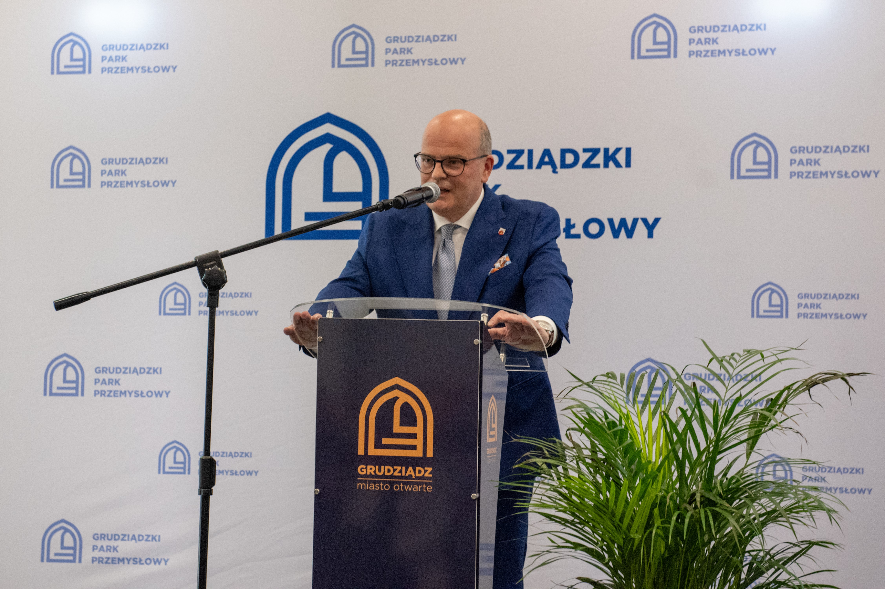

To wyjątkowe miejsce na mapie Środy Śląskiej jest spełnieniem potrzeb i oczekiwań małych i średnich przedsiębiorców rozpoczynających swoją przygodę z biznesem. To właśnie dla nich powstał Średzki Inkubator Przedsiębiorczości, którego uroczyste otwarcie odbyło się 1 marca. Partnerami eventu była firma Catering Merkury, która przygotowała poczęstunek dla gości oraz TVi Roland, który na żywo relacjonował wydarzenie w sieci.
Prowadzenie własnej działalności gospodarczej wymaga odwagi, samozaparcia i konsekwencji, ale potrzebne są także umiejętności organizacyjne i wiedza – jak uzyskać wsparcie i gdzie go szukać. Wychodząc naprzeciw oczekiwaniom takich osób, burmistrz Adam Ruciński podjął decyzję o utworzeniu Średzkiego Inkubatora Przedsiębiorczości.
Zadaniem Średzkiego Inkubatora Przedsiębiorczości jest zapewnienie osobom rozpoczynającym i prowadzącym działalność gospodarczą kompleksowego wsparcia. – Przede wszystkim jest to wynajem powierzchni biurowych, ale oprócz tego również tzw. usługi miękkie, czyli doradztwo finansowe, księgowe, prawne. I co ważne dla przedsiębiorców, pozyskiwanie funduszy zewnętrznych, od wsparcia w poszukaniu funduszy, do napisania wniosku aplikacyjnego – wymienia Mariola Kądziela, prezes spółki Średzki Inkubator Przedsiębiorczości.